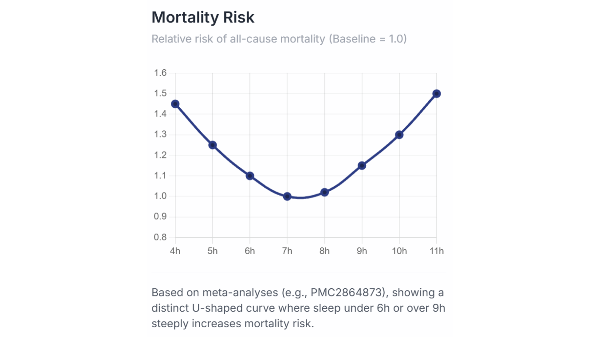

Sleep Duration vs Mortality

Studies also show that sleep is strongly correlated to all-cause mortality, with lack of sleep and excess sleep increasing your risk of all-cause mortality by roughly 50% compared to a normal sleep duration.
The graph shows a strong U-shaped distribution, with 7-8 hours being ideal for not increasing your chances of death. Sleeping <6 hours increases strain on your cardiovascular, metabolic, and immune systems, decreasing their effectiveness at a detriment to your health.
Furthermore, those with greater than 9 hours of sleep are likely to suffer from fragmented sleep, which strongly decreases their sleep quality, causing a higher amount of bad-quality sleep, leading back to the same issues as lack of sleep.